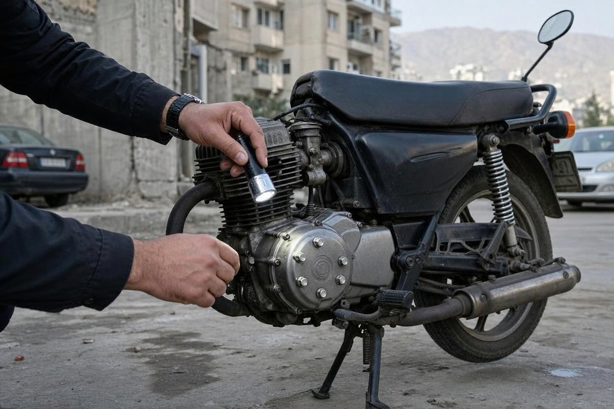
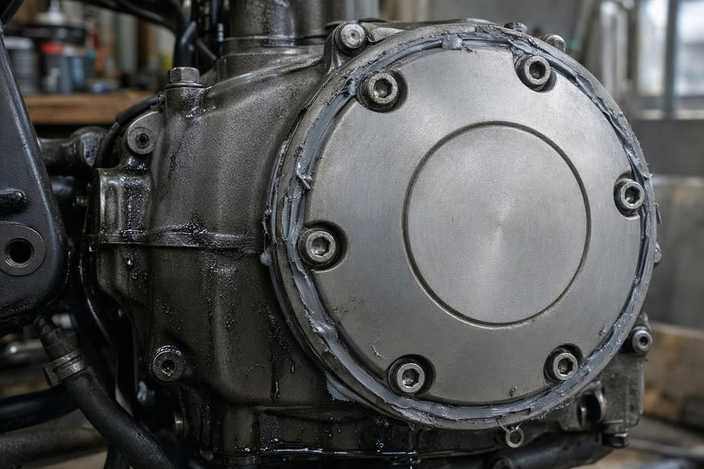
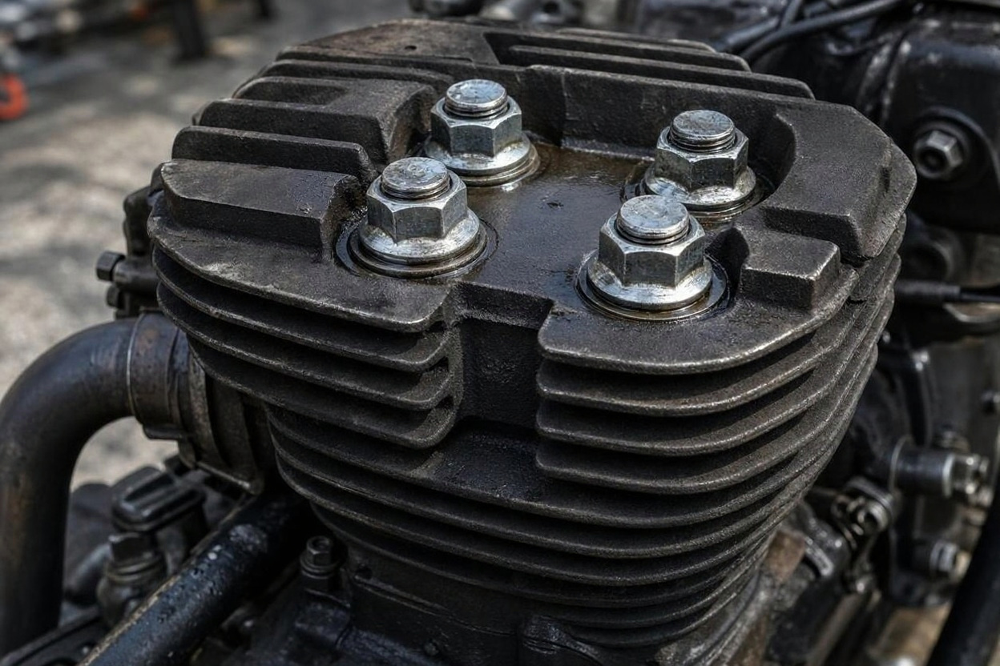
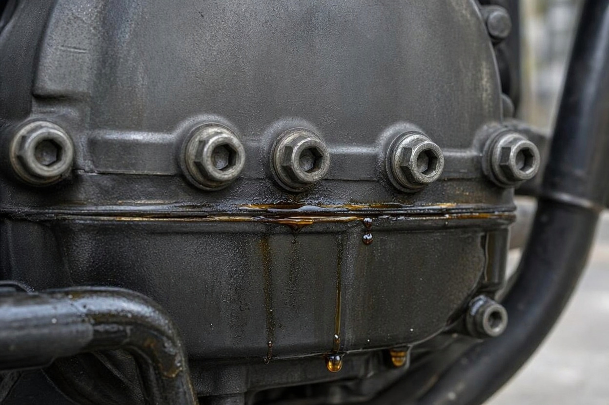

از کجا بفهمیم موتور موتورسیکلت باز شده؟
فرض کنید برای دیدن یک موتور ۱۲۵ سیسی طرح شهری رفتهاید. فروشنده میگوید فقط روغن و شمع عوض شده، اما گوشه پیچهای درپوش کلاچ براق است و از درز پوسته کمی خمیر درزگیر بیرون زده. ظاهر تمیز موتور همیشه همهچیز را نشان نمیدهد.
موتور موتورسیکلت باز شده یعنی درپوشی جدا شده که به محفظه احتراق، کلاچ یا پوسته میللنگ راه دارد، نه اینکه فقط روغن عوض شده باشد. در این راهنمای کارماچک برای خرید موتور کارکرده نشانهها را جدا میبینیم و بعد میگوییم کدام ترکیبشان معنای تعمیر میدهد.
موتور موتورسیکلت باز شده را از یک پیچ تازه نمیشود فهمید. باز شدن یعنی جدا شدن درپوش سرسیلندر، کلاچ یا پوسته میللنگ برای تعمیر، نه تعویض روغن. وقتی آچارخوردگی پیچ، واشر یا خمیر درزگیر تازه، نشتی از همان درز و دود یا صدای غیرعادی با هم دیده شوند، احتمال تعمیر اخیر جدی است. هر نشانه بهتنهایی حکم قطعی نیست.
خلاصه در یک دقیقه
- سرویس روغن و شمع با باز شدن موتور یکی نیست. اول معلوم کنید کدام درپوش باز شده است.
- درپوش سوپاپ، سرسیلندر، درپوش کلاچ و پوسته میللنگ چهار سطح متفاوت از کار را نشان میدهند.
- پیچ براق، واشر نو و خمیر بیرونزده فقط وقتی معنا دارند که با کثیفی بقیه موتور مقایسه شوند.
- دود بعد از گرم شدن، نشتی تر از همان درز، و حرف فروشنده باید یک جهت را نشان بدهند.
- نبودن رد آچار، باز نشدن موتور را ثابت نمیکند. کار تمیز و کارکرد بعدی اثر را کمرنگ میکند.
موتور موتورسیکلت باز شده با سرویس چه فرقی دارد؟
در حرف بازار، موتور باز شده یعنی کسی برای تعمیر به داخل موتور دسترسی پیدا کرده است. عوض کردن روغن، شمع، صافی بنزین یا فیلتر هوا این دسترسی را لازم ندارد. اگر فروشنده همه این کارها را «تعمیر موتور» بنامد، هنوز معلوم نیست سرسیلندر یا پوسته از جا درآمده باشد.
موتورهای شهری تکسیلندر هواخنک در خرید و فروش کارکرده ایران زیاد دیده میشوند. روی همین خانوادهها سه سطح کار را از هم جدا کنید. سطح اول تنظیم فاصله سوپاپ است و معمولاً فقط درپوش بالای سرسیلندر باز میشود. سطح دوم کار روی سوپاپ، رینگ یا پیستون است و سرسیلندر یا بوش از جا درمیآید. سطح سوم شکافتن پوسته میللنگ است، جایی که یاتاقان و میللنگ قرار دارند. تنظیم سوپاپ نگهداری است. باز شدن پوسته، اگر بهخاطر صدا یا گیرپاژ بوده باشد، سابقه سنگینتری است.
کدام درپوش باز شده است؟
همه درپوشها یک خبر نمیدهند. «موتور باز شده» بدون نام قطعه، هم برای فروشنده راحت است و هم خریدار را به نتیجه اشتباه میرساند.
تنظیم سوپاپ با باز شدن سرسیلندر یکی نیست
درپوش سوپاپ کوچک است و باز شدنش روی بسیاری از موتورهای شهری رایج است. این کار بهتنهایی به معنی تعمیر اساسی نیست. مهرههای دور خود سرسیلندر داستان دیگری دارند. اگر آن مهرهها با هم رد آچار تازه داشته باشند، یا دور نشیمن بوش اثر واشر نو و خمیر دیده شود، کار از یک تنظیم ساده گذشته است.
پوسته میل لنگ را با درپوش کلاچ عوضی نگیرید
درپوش کلاچ صفحه کلاچ را در دسترس میگذارد. پوسته میللنگ همان نیمه بزرگتری است که با یک ردیف پیچ به نیمه مقابل بسته شده. آچارخوردگی سراسری آن ردیف، بهخصوص وقتی درزگیر تازه هم دور همان خط باشد، به باز شدن عمیقتر اشاره دارد. باز شدن درپوش کلاچ میتواند فقط تعویض صفحه باشد.
در اسکوتر، درپوش جعبه تسمه خیلی وقتها برای تعویض تسمه یا واریاتور باز میشود. این کار انتقال قدرت است، نه باز شدن موتور. اگر فقط همان درپوش تمیز است و پوسته موتور چرب و دستنخورده مانده، نشانه را به سرویس تسمه برگردانید. جزئیات آن بخش در راهنمای کارشناسی انتقال قدرت، ترمز و برق اسکوتر آمده و جای تشخیص باز شدن موتور را نمیگیرد.

پیچ، واشر و درزگیر چه می گویند؟
پیچ را با بقیه همان موتور مقایسه کنید، نه با تصور یک موتور نو. گوشه براق، جای آچار تیز، و اختلاف رنگ سر پیچ با بدنه کثیف یعنی آن پیچ اخیراً چرخیده است. در عمل اگر پیچهای یک درپوش تقریباً همه این وضع را داشته باشند، همان درپوش باز شده. اگر فقط یکی نو است، احتمال بیشتر این است که همان پیچ هرز شده و عوض شده باشد.
واشر نو کنار سطح چرب، یا خمیر درزگیری که از درز بیرون زده و هنوز خاک نگرفته، مونتاژ اخیر را محتمل میکند. بعضی مونتاژهای کارخانهای هم از واشر مایع استفاده میکنند، پس خودِ بودنِ درزگیر جرم نیست. مقدار زیاد، اثر انگشت، و همراهی خمیر با نشتی روغن خوانش را عوض میکند. اگر سطح بیرونی براق است و کف جای پیچ هنوز چرب و تیره، برق بدنه بیشتر از شستوشو آمده تا از آچار.

دود، صدا و نشتی را کجا بگذاریم؟
موتور سرد را یک بار روشن کنید و بگذارید گرم شود. دود سفید کوتاه در استارت سرد، بهخصوص وقتی هوا خنک است، اغلب بخار است و با گرم شدن میخوابد. دودی که بعد از گرم شدن میماند و به آبی میزند، بیشتر به روغنسوزی مربوط است: رینگ، گاید سوپاپ یا دیواره سیلندر. روغنسوزی ثابت نمیکند کسی موتور را باز کرده. اگر همان موقع مهره سرسیلندر یا درپوش بالا هم آثار باز شدن دارد، احتمال تعمیر تازه یا تعمیر ناقص بالاتر میرود.
صدای تیکتیک ریز که با گاز عوض میشود ممکن است از فاصله سوپاپ باشد. اگر فروشنده میگوید تازه تنظیم شده و صدا هنوز هست، تنظیم یا تمام نشده یا منشأ صدا جای دیگری است. تقتق بم از پایین موتور را با گوش خریدار تمام نکنید. این صدا میتواند به یاتاقان مربوط باشد. در این وضعیت تست حرکت را طولانی و پرگاز نکنید.

نشتی را محلیابی کنید. روغن تر روی درز همان درپوشی که پیچهایش براق است، با لک خشک وسط پرهها فرق دارد. لک کهنه میتواند از سالها کار مانده باشد. روغن تازه دور درز، با جمله «سالها باز نشده» نمیخواند.
روی موتور آبخنک، روغن شیریرنگ را جدا ببینید. مخلوط شدن آب و روغن معمولاً از مسیر آب یا واشر سرسیلندر میآید. این سرنخ مال موتور هواخنک نیست و نباید به همه موتورسیکلتها تعمیم داده شود.
کدام ترکیب نشانه ها جدی تر است؟
نشانه تنها یک سرنخ است. جدول زیر جای دیدن همان موتور را نمیگیرد. فقط نشان میدهد کدام همراهی را در یادداشت خرید جدیتر بنویسید و کدام را به سرویس معمولی برگردانید.
| ترکیب نشانه ها | خوانش محتمل | برای حکم قطعی کافی است؟ |
|---|---|---|
| فقط یک پیچ نو روی درپوش سوپاپ | تعویض همان پیچ، یا یک بار باز شدن محدود درپوش | خیر |
| همه پیچهای یک درپوش براق، بهعلاوه خمیر تازه | همان درپوش اخیراً باز و دوباره بسته شده | برای همان درپوش محتمل است، عمق تعمیر را نمیگوید |
| مهره سرسیلندر تازهآچارخورده، بهعلاوه دود آبی بعد از گرم شدن | کار روی سرسیلندر یا رینگ، شاید ناقص | خیر، اما مسیر بررسی را از سرویس ساده جدا میکند |
| ردیف پیچ پوسته آچارخورده، بهعلاوه نشتی تر از همان درز | باز شدن پوسته میللنگ یا مونتاژ ضعیف همان درز | جدی است، علت داخلی را ثابت نمیکند |
| فقط درپوش تسمه اسکوتر تمیز، پوسته موتور کهنه | سرویس انتقال قدرت، نه باز شدن موتور | برای باز شدن موتور کافی نیست |
| موتور یکدست شسته، بدون اختلاف پیچ و درز | شستوشو. ممکن است آثار را هم کمرنگ کرده باشد | خیر |
اگر دو ردیف از دو خانواده متفاوت با هم دیده شد، مثلاً آثار پوسته بهعلاوه صدا از پایین، دیگر با یک توضیح شفاهی جلو نروید. کارشناسی موتورسیکلت پیش از خرید کمک میکند این ترکیب روی خود دستگاه از هم جدا شود.
پیش از معامله، موتور را بررسی کنید
اگر آثار باز شدن با دود، نشتی یا حرف فروشنده یکجا جمع شده، دیدن تخصصی همان موتور ابهام معامله را کمتر میکند.
جزئیات کارشناسی موتورسیکلتبررسی را مرحله به مرحله چطور انجام دهیم؟
- مرحله اول:موتور را سرد و روی سطح صاف ببینید، پیش از آنکه فروشنده روشن کند و دود اولیه رد شود.
- مرحله دوم:درپوش سوپاپ، مهره سرسیلندر، درپوش کلاچ و ردیف پیچ پوسته را جدا نام ببرید. همه را یکجا موتور ننامید.
- مرحله سوم:برق پیچ، واشر و خمیر را با کثیفی اطراف و با گودی جای پیچ مقایسه کنید.
- مرحله چهارم:روغن را از نظر سطح و رنگ ببینید. شیری بودن را فقط روی موتور آبخنک جدی بگیرید.
- مرحله پنجم:سرد روشن کنید، بگذارید گرم شود، بعد رنگ دود و اینکه میماند یا نه را یادداشت کنید.
- مرحله ششم:بپرسید آخرین بار کدام قطعه باز شده و جواب را با همان درپوش تطبیق دهید.
خریدار معمولا کجا اشتباه می کند؟
اشتباه اول این است که موتور شستهشده را تعمیرشده حساب کنید. آب و مواد چربیبر برق یکدستی میسازند، اما گودی پیچ، لبه واشر و نرمی خمیر را همیشه مثل سطح بیرونی عوض نمیکنند.
اشتباه دوم، خواندن درپوش تسمه اسکوتر بهجای پوسته موتور است. اشتباه سوم، ساختن یک تعمیر اساسی از یک پیچ نو است. اشتباه چهارم برعکس اینهاست: نبودن رد آچار را دلیل سلامت گرفتن. چند ماه کارکرد، برق پیچ را میگیرد. مونتاژ تمیز هم میتواند خمیر اضافه را پاک کرده باشد.
اگر روی پوسته ترک یا جوش میبینید، موضوع فقط تعمیر داخلی نیست. ضربه میتواند هم بدنه را جابهجا کند هم بهانه باز شدن موتور شود. در آن حالت راهنمای تشخیص موتورسیکلت تصادفی از شاسی و دوشاخ را هم ببینید، چون این مقاله جای بررسی شاسی را نمیگیرد.
چه زمانی بررسی تخصصی لازم است؟
وقتی ترکیب نشانهها به پوسته میللنگ، دود پایدار بعد از گرم شدن، نشتی فعال، یا حرفی که با درپوشها نمیخواند برسد، مشاهده کنار خیابان به سقف خودش رسیده است. منشأ صدا و کیفیت بستن پوسته با چشم غیرمسلح تمام نمیشود.
کارماچک خدمات کارشناسی موتورسیکلت را در ایران ارائه میدهد تا همین نشانهها روی خود دستگاه جدا شوند و اثرشان روی معامله روشن شود. این بررسی جای باز کردن موتور در تعمیرگاه را نمیگیرد.
اگر موتور بعد از تعمیر مدت طولانی خوابیده، فرسودگی خواب را با ایراد همان تعمیر قاطی نکنید. راهنمای خرید موتور خوابیده و برآورد هزینه راه اندازی آن بخش را جدا توضیح میدهد.
برای معاملهای که نشانهها همجهت نیستند، بررسی موتورسیکلت قبل از معامله منطقیتر از جمعبندی روی یک پیچ براق است.
جمع بندی
موتور موتورسیکلت باز شده یک برچسب واحد نیست. درپوش سوپاپ، سرسیلندر، کلاچ و پوسته میللنگ چهار خبر متفاوتاند. یک پیچ براق حتی خبر باز شدن همان درپوش را هم کامل نمیدهد.
معنا وقتی ساخته میشود که آثار ظاهری، نشتی یا دود، و حرف فروشنده یک جهت را نشان بدهند. اگر این سه تراز نشدند، پول معامله را به ظاهر تمیز یا به یک جمله کلی وصل نکنید. تشخیص قطعی عمق تعمیر، بدون دیدن همان موتور، از روی این راهنما ممکن نیست.
حدس را مبنای معامله نگذارید
اگر چند نشانه با هم جمع شدهاند، بررسی همان موتورسیکلت تصویر روشنتری از سابقه تعمیر میدهد.
درخواست کارشناسی موتورسیکلتسؤالات متداول
موتور باز شده یعنی موتور عوض شده است؟
نه. موتور موتورسیکلت باز شده یعنی حداقل یک درپوش اصلی برای تعمیر جدا شده و دوباره بسته شده است. عوض شدن کل موتور، تعویض پوسته، یا فقط تنظیم سوپاپ سه اتفاق متفاوتاند. تا معلوم نشود کدام درپوش باز شده، نمیشود گفت عمق کار چقدر بوده و آیا روی قیمت معامله اثر جدی دارد یا نه.
یک پیچ براق برای تشخیص کافی است؟
خیر. یک پیچ نو یا براق بیشتر یعنی همان پیچ عوض یا سفت شده است. وقتی بیشتر پیچهای یک درپوش با هم رد آچار تازه دارند، باز شدن آن درپوش محتمل میشود. حتی همان هم عمق تعمیر را نمیگوید. درپوش سوپاپ، سرسیلندر و پوسته میللنگ را جدا ببینید و نشانه ظاهری را با نشتی، دود یا حرف فروشنده تکمیل کنید.
باز شدن درپوش تسمه اسکوتر یعنی موتور باز شده؟
نه. در اسکوتر، درپوش جعبه تسمه برای سرویس تسمه و قطعات انتقال قدرت باز میشود و با پوسته موتور یکی نیست. اگر فقط همان درپوش تمیز است، موضوع را سرویس انتقال قدرت بگذارید. موضوع وقتی به باز شدن موتور نزدیک میشود که درپوش سرسیلندر، کلاچ یا پوسته میللنگ هم آثار باز و بست داشته باشد.
اگر فروشنده بگوید فقط سوپاپ تنظیم شده چه کنیم؟
تنظیم سوپاپ روی خیلی از موتورهای شهری کار رایجی است و معمولاً فقط درپوش بالای سرسیلندر را باز میکند. حرف فروشنده را با مهرههای خود سرسیلندر و ردیف پیچ پوسته مقایسه کنید. اگر آن پیچها هم تازهاند، روایت تنظیم ساده با ظاهر موتور نمیخواند. اگر بعد از تنظیم هنوز تیکتیک میشنوید، یا تنظیم کامل نیست یا صدا از جای دیگری میآید.
دود آبی یعنی موتور حتما باز شده؟
نه. دود آبی بعد از گرم شدن بیشتر روغنسوزی را مطرح میکند. علتش میتواند رینگ، گاید سوپاپ یا حتی سطح نادرست روغن باشد. این دود بهتنهایی سابقه باز شدن را ثابت نمیکند. اگر همزمان آثار باز شدن سرسیلندر را دیدید، احتمال تعمیر تازه یا ناقص بیشتر میشود. دود سفید کوتاه در استارت سرد را با این یکی نگیرید. آن دود اغلب با گرم شدن قطع میشود.
اگر هیچ رد آچاری نباشد موتور باز نشده؟
نبودن رد تازه، باز نشدن را ثابت نمیکند. بعد از چند ماه کارکرد برق پیچ کم میشود و شستوشو مقایسه را سخت میکند. مونتاژ تمیز هم میتواند خمیر اضافه را پاک کند. برای همین نبود نشانه، مجوز حذف بررسی صدا، دود و نشتی نیست. اگر معامله جدی است، هنوز باید خود موتور دیده شود نه اینکه از روی نبود رد آچار جمعبندی کنید.